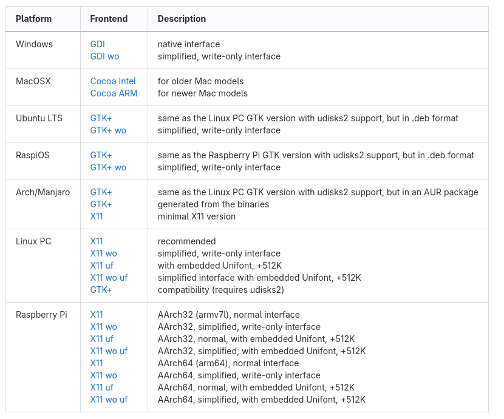
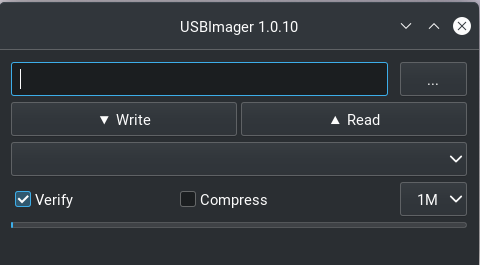

Pop!_OS Overview
Pop!_OS is a user-friendly Linux distribution developed by System76, based on Ubuntu. It is designed to provide a smooth out-of-the-box experience, particularly for developers, engineers, and users working with graphics-intensive applications. Pop!_OS includes built-in support for NVIDIA GPUs, a customized GNOME-based desktop (COSMIC), and a curated set of tools aimed at productivity and system stability.
The strength of Pop!_OS lies in its balance between usability and performance. It offers a polished desktop environment, reliable package management through APT, and strong hardware compatibility, making it an excellent choice for both beginners and experienced users. On the downside, it provides less low-level customization compared to Arch Linux, and its release cycle does not deliver updates as rapidly as rolling-release distributions.
Pre-Installation
Before beginning the installation, you must download the Pop!_OS ISO image and create a bootable USB drive.
Download the ISO Image
Navigate to the Pop!_OS download page.
You will be presented with multiple download options:
Intel/AMD (Standard) — for most systems
NVIDIA — for systems with NVIDIA GPUs (recommended if applicable)
Raspberry Pi — for ARM-based devices
Select the appropriate version for your hardware and download the ISO image to your local machine.
Flash the ISO to a USB Drive
To create a bootable USB drive, use a tool such as USB Imager.

Install USB Imager and launch the application:

Steps:
Select the downloaded
.isofileSelect your USB drive
Enable the Verify option
Click Write
Warning
All data on the USB drive will be erased during this process.
Once complete, the USB drive will be bootable.
Installation
Booting the Installer
Insert the USB drive and power on the system. Enter the UEFI boot menu
(commonly accessed via F2, F10, F12, or DEL depending on your system).
Select the USB device as the boot source.
You should see an option similar to:
Pop!_OS install medium (x86_64, UEFI)
Select this option and press Enter.
Note
The exact wording may vary slightly depending on the Pop!_OS version.
Installer Workflow
Once booted, the Pop!_OS graphical installer will guide you through the process.
Typical steps include:
Selecting language and keyboard layout
Connecting to a network
Choosing installation type
Selecting disk and partition options
Disk Encryption (Recommended)
Pop!_OS provides built-in full disk encryption support during installation.
It is strongly recommended to enable encryption unless you have a specific reason not to.
Benefits include:
Protection of data at rest
Improved security for laptops and mobile systems
Seamless integration with the Pop!_OS installer
Complete Installation
Follow the remaining installer prompts to:
Create a user account
Set a password
Finalize installation
Once installation is complete:
Remove the USB drive
Reboot the system
You should then boot into your new Pop!_OS desktop environment.
Post Installation
To be filled out